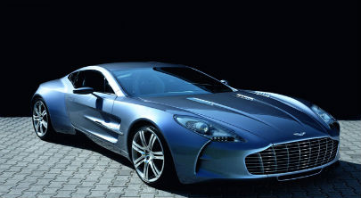
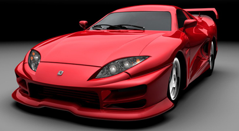
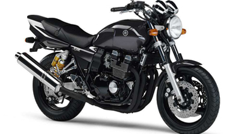

焦点图



1
2
3
Step 0、创建风格
focusfigure.js
<script type="text/javascript" src="Scripts/focusfigure.js"></script>
Step 1、创建CSS
#galwraper{ position:relative;} #gal-wrap { position:relative; margin:15px 0 0 15px; } #gallery { position:absolute; } #gallery li { list-style:none; float:left; width: 405px; height:222px;} #gallery p { text-align:center; color: #cdcdcd; } #gal-panel { overflow:hidden; height:16px; clear:both; position:absolute; left:20px; top:200px;} #gal-panel li { float:left; cursor: pointer; } #gal-panel li a{ width:16px; height:16px; display:inline; float:left; color:#a2a2a2; background:#000; text-align:center; line-height:16px; text-decoration:none; font-weight:bold; margin-right:5px; background:url(../images/a_link_bg.jpg) no-repeat} #gal-panel li a:hover, #gal-panel li.current a { color:#eaf47f; background:url(../images/a_link_cur.jpg) no-repeat; text-align:center; }
Step 2、创建标准的html结构
<div id="galwraper"> <div id="gal-wrap"> <ul id="gallery"> <li><p></p></li> <li><p></p></li> <li><p></p></li> </ul> </div> <div id="gal-panel"> <ul id="gallery-panel"> <li><a href="#">1</a></li> <li><a href="#">2</a></li> <li><a href="#">3</a></li> </ul> </div> </div>
Step 3、创建js
<script type="text/javascript"> var tt = new ss.slider(); tt.init({ gallery: 'gal-wrap', //此处填写 gallery 的外容器 id. 必填项. control: "gal-panel", //此处填写 panel 的外容器 id. 必填项. dir: false, // 此处填写幻灯片切换的方向. true 为垂直方向, false 为水平方向. 默认为 false. 选填项. index: 0, // 此处填写希望从哪张幻灯片开始. 从 0 开始, 不得大于幻灯片的总长度(即 gallery item 的 length - 1). 默认从 0 开始. 选填项. speed: 16, // 此处填写幻灯片的切换速度. 数值越大则切换速度越慢. 默认为 16. 选填项. interval: 1000, // 此处填写幻灯片的切换时长. 数值越大则切换时间越长. 单位为毫秒. 默认为 3000(3 秒钟). 选填项. type: 'mouseover' // 此处填写切换幻灯片的形式. 可以接受 click(单击)和 mouseover(移动) 两种形式. 默认为 click. }); </script>